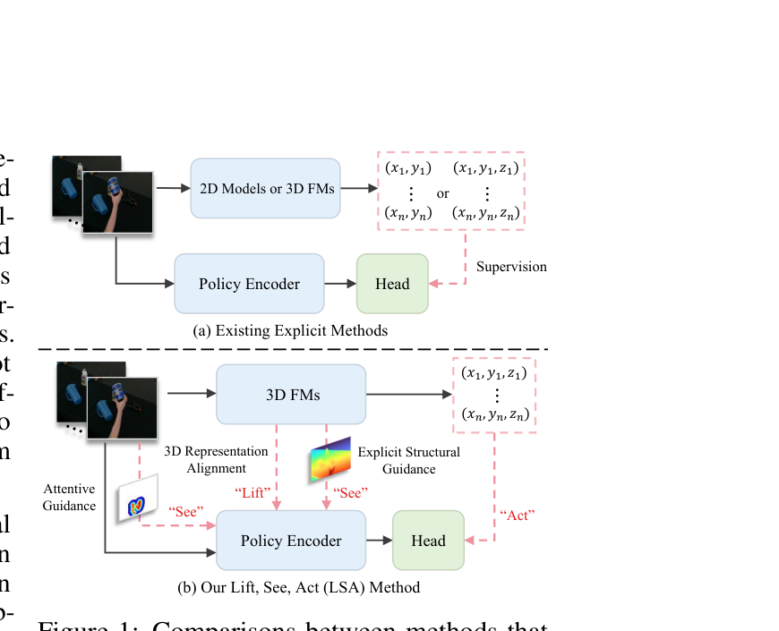

Abstract
Robot policy pretraining based on human videos is crucial for improving the policy's generalization ability. One main challenge is the lack of explicit action-relevant representations in such unlabeled data. Recent works estimate 3D hand motion trajectories from videos using 3D foundation models (3D FMs), but retain only sparse trajectories as supervision and overlook the rich, fine-grained information produced during trajectory extraction. To address this issue, we propose LSA, a hierarchical robot policy pretraining framework with three phases: Lift, See, and Act. Lift elevates 2D video observations into dense 3D representations by aligning shallow policy features with intermediate representations from multiple 3D FMs. See equips the policy with explicit geometric and interactive awareness through depth-map reconstruction and hand-region attention guidance. Act leverages these representations for robust and accurate robotic manipulation. Extensive experiments across diverse simulation and real-world tasks demonstrate that LSA significantly outperforms current state-of-the-art approaches.
Comparison with Previous Methods

Existing methods mainly retain sparse 2D or 3D trajectories as supervision. LSA instead exploits intermediate representations from 3D foundation models: dense 3D representation alignment provides the Lift, structural and attentive guidance enable the policy to See, and 3D motion supervision teaches it to Act.
Pipeline

LSA contains a data engine, hierarchical policy pretraining, and closed-loop control. The data engine extracts dense geometry, metric depth, 2D hand keypoints, and 3D hand motions from diverse human videos. During pretraining, representation alignment, depth reconstruction, attentive guidance, and motion prediction progressively inject geometry and interaction knowledge into the policy. At deployment, the pretrained encoder transfers these priors to closed-loop robot control.
Attentive Guidance

Hand-region cues explicitly guide the encoder toward interaction hotspots. On both human videos and robotic scenes, attentive guidance strengthens responses around the hand, gripper, and manipulated objects while suppressing irrelevant background regions.
Real-world Experiments
We evaluate LSA with a Franka Research 3 robot on four manipulation tasks and two out-of-distribution towel-color variants. LSA achieves a 68.3% average success rate, outperforming the compared visual representation learning baselines.

Real-world Demo
The real-world demonstrations show LSA executing four manipulation tasks and generalizing to unseen towel colors. Videos are loaded only when they enter the viewport, following the interaction pattern used by the DreamVLA project page.
Wipe PC.
Pluck the flower.
Pick up the trash.
Place the toy.
Wipe PC — unseen towel color U1.
Wipe PC — unseen towel color U2.